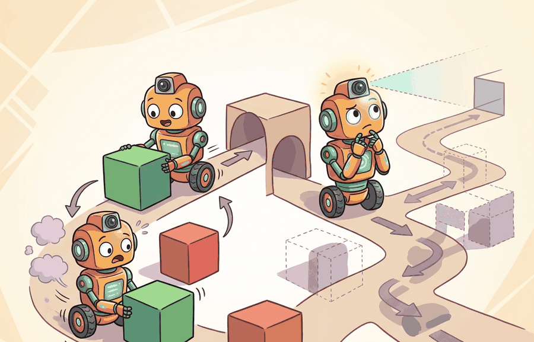

"The reactive agent acts before it thinks. The deliberative agent thinks before it acts. Neither approach is wrong; only the deadline decides which one is."
Section 3.5

Reactive vs. deliberative agents is one lens on embodied system architectures. We study it because an embodied agent needs decisions that survive contact with noisy sensors, delayed effects, and changing environments, all of which arise directly from the perception-action loop.
This section develops the technical contract for reactive vs. deliberative agents into a usable mental model. First we define the object of study, then we connect it to the agent loop, then we test it with a compact implementation.
The key question in Reactive vs. deliberative agents is practical: what must the agent know, what can it observe, what action is available, and what evidence shows that the action worked under the stated conditions?
A representation earns its place when it changes the measurable action interface. In reactive vs. deliberative agents, the reader should keep asking which decision becomes easier, safer, or more reliable.
Theory
For Reactive vs. deliberative agents, the practical design rule is to make the interface inspectable before optimization begins: inputs, outputs, units, latency, bounds, and failure labels should all be visible in the saved artifact.
The reactive and deliberative split is a timing decision, not a personality type for agents. A reactive policy chooses $a_t = \pi(o_t)$ from the current observation or a short memory. A deliberative agent evaluates possible futures and chooses an action or plan that scores well under a model using discounted cumulative reward over a finite horizon, often written as:
$$a_t = \arg\max_{a \in \mathcal{A}} \mathbb{E}\left[\sum_{k=0}^{H} \gamma^k r(s_{t+k}, a_{t+k}) \mid \hat{s}_t, a\right].$$
The horizon $H$ measures how far the agent looks ahead, $\gamma$ discounts later rewards, and $r$ encodes the task objective. Reactive control is appropriate when the deadline is shorter than the planning time or when the local cue is sufficient. Deliberation is appropriate when the immediate best action can trap the agent, such as pushing an object into a corner before grasping it. The practical design is usually a mixture: reflexes guard safety while planning handles irreversible choices. Consider a specific case: the autonomous vehicle stack used in Waymo's production fleet separates a reactive obstacle-avoidance module (running at roughly 100 Hz on lidar returns) from a deliberative route planner (running at 10 Hz over a semantic map). When a cyclist cuts in front of the vehicle, the reactive layer applies braking within 10 ms without waiting for the planner; the planner then reroutes around the disruption over the next few hundred milliseconds. This split is not a software convenience: the reactive layer operates within the braking distance window (roughly 7 m at city speeds), where a 100 ms planning delay would already mean a collision.
The mechanism in Reactive vs. deliberative agents is the contract between representation and action. Name what enters the module, what leaves it, which assumptions make that transformation valid, and which log would reveal a bad handoff.
Worked Example
The reactive/deliberative split is sharpest on a task where the locally best move is a trap. The example is a small grid with a wall: the agent starts at the bottom-left, the goal is across the wall, and the only gap is at the top. A reactive policy that greedily reduces straight-line distance presses into the wall and stalls; a deliberative policy that searches the model with breadth-first planning finds the detour through the gap.
from collections import deque
GOAL = (4, 2)
WALL = {(2, 0), (2, 1), (2, 2)} # vertical wall, gap only at top (y=3)
MOVES = [(-1, 0), (1, 0), (0, -1), (0, 1)]
def dist(p): # Manhattan distance to goal
return abs(GOAL[0] - p[0]) + abs(GOAL[1] - p[1])
def step(p, m):
n = (p[0] + m[0], p[1] + m[1])
if not (0 <= n[0] <= 4 and 0 <= n[1] <= 3) or n in WALL:
return p # blocked: stay put
return n
def reactive(p): # greedy: minimize distance now
return min(MOVES, key=lambda m: dist(step(p, m)))
def deliberative(p): # BFS over the world model -> first move
frontier, seen = deque([(p, None)]), {p}
while frontier:
cur, first = frontier.popleft()
if cur == GOAL:
return first if first else (0, 0)
for m in MOVES:
nxt = step(cur, m)
if nxt not in seen:
seen.add(nxt)
frontier.append((nxt, first if first else m))
return (0, 0)
for name, agent in [("reactive", reactive), ("deliberative", deliberative)]:
p, steps = (0, 0), 0
for _ in range(20):
p = step(p, agent(p)); steps += 1
if p == GOAL:
break
print(f"{name:12s} reached={p == GOAL} steps={steps} end={p}")
Expected output: the reactive agent stalls because every distance-reducing move is blocked by the wall, so it never reaches the goal; the deliberative agent plans a path up to the gap, across, and down to the goal. This is the core trade: deliberation pays a search cost per decision (it can expand the whole reachable set) but escapes local traps a reflex cannot see. The greedy heuristic that the reactive agent uses has a genuine local minimum at the wall, which is exactly the situation where lookahead earns its cost.
For Reactive vs. deliberative agents, the hand-built fragment is a visibility tool. Production work should move to maintained stacks such as Hugging Face Transformers, open VLMs, OpenVLA, openpi, LeRobot, and tool-calling planners once the section has made the interface, logging contract, and failure recovery path explicit.
Practical Recipe
- Write the observation, action, and success metric before choosing a model.
- Build a baseline that is simple enough to debug by inspection.
- Add the library implementation only after the baseline behavior is understood.
- Record failures as structured cases: perception error, state error, planning error, control error, or evaluation error.
- Run at least one perturbation test before trusting the result.
Deliberative agents fail in practice when the world changes faster than the planning cycle. A concrete case: Boston Dynamics' early navigation stacks used a planner that recomputed a global path every few hundred milliseconds. On terrain where a foothold collapsed mid-step, the new plan arrived after the fall had already started. The lesson is not that deliberation is wrong, but that any plan has a validity window, and the reactive layer must take over when the deadline for the current plan expires. A deliberative agent that does not know when to stop deliberating is more dangerous than a pure reflex, because it commits to a stale plan with apparent confidence.
A robotics team using reactive vs. deliberative agents should log not only final success, but intermediate observations, chosen actions, controller status, and recovery events. The logs reveal whether the method is solving the task or merely passing the easiest episodes.
Reactive agents have excellent reflexes. Deliberative agents have excellent reasons for being late.
For Reactive vs. deliberative agents, treat frontier claims as hypotheses until they expose enough detail to reproduce the result: data boundary, embodiment, controller interface, evaluation panel, and failure cases.
Can you name the observation, state estimate, action, success metric, and most likely failure mode for reactive vs. deliberative agents? If not, the system boundary is still too vague.
Reactive vs. deliberative agents becomes useful when it is tied to a closed-loop contract for how perception, estimation, planning, learning, and control are arranged into a system. The contract names the observation stream, the action representation, the timing budget, the safety boundary, and the result artifact. That is the bridge between a readable concept and a system a skeptical builder can test.
For Reactive vs. deliberative agents, separate the conceptual claim, the systems claim, and the evidence claim. A good explanation, a clean API, and one successful rollout are different kinds of evidence, and the section should keep them distinct.
| Tool or Library | Role in This Topic | Builder Advice |
|---|---|---|
| ROS 2 | separates system modules while preserving message contracts and timing | Use it when the hand-built contract is clear and the experiment needs repeatable runs. |
| MuJoCo | gives architecture choices a repeatable simulated world for stress tests | Use it when the hand-built contract is clear and the experiment needs repeatable runs. |
| LeRobot | anchors modern policy architectures in reusable datasets and policy APIs | Use it when the hand-built contract is clear and the experiment needs repeatable runs. |
For Reactive vs. deliberative agents, a robust implementation starts with one inspectable baseline whose artifact records observations, actions, units, timestamps, seeds, termination reasons, and the perturbation applied. The maintained-tool version is useful only if it preserves that schema and lets the comparison remain construct-matched.
- Write a one-paragraph task contract with observation, action, success, failure, and safety fields.
- Start with the smallest simulator, dataset, or wrapper that exposes the task contract faithfully.
- Run one deterministic smoke test and one perturbation test before scaling.
- Save one artifact containing configuration, seed, metrics, traces, and failure labels.
- Compare methods only when the same script evaluates the same panel, split, seed set, and metric.
When Reactive vs. deliberative agents fails, avoid labeling the whole method as weak. First assign the failure to perception, state estimation, planning, control, timing, data coverage, or evaluation. Then rerun one controlled perturbation that isolates the suspected cause. This pattern turns a disappointing rollout into a reusable diagnostic asset.
A good test varies the deadline and the need for lookahead separately. In a surprise-obstacle test, the reactive layer should avoid collision even if the planner has not finished. In a long-horizon rearrangement test, the deliberative layer should outperform a reflex because it can preserve future options. If both tests show the same behavior, the architecture probably does not contain the separation it claims.
Reactive vs. deliberative agents is useful when it makes the perception-action loop more reliable, not when it merely adds a more impressive model name.
Design a method-matched experiment for Reactive vs. deliberative agents. Specify the environment, observation schema, action interface, metric, and one perturbation that targets the section's core assumption.
What's Next?
Section 3.6 explains dual-system designs and their roots.
Bibliography & Further Reading
Foundational References For This Section
Quigley, M. et al.. "ROS: an open-source Robot Operating System." (2009). https://www.ros.org/
The systems reference for modular robot software and message-passing architecture.
Todorov, E., Erez, T., and Tassa, Y.. "MuJoCo: A physics engine for model-based control." (2012). https://mujoco.org/
A widely used simulator for architecture and control experiments.
Brohan, A. et al.. "RT-2: Vision-Language-Action Models Transfer Web Knowledge to Robotic Control." (2023). https://arxiv.org/abs/2307.15818
A central reference for locating VLM and VLA models in embodied control stacks.